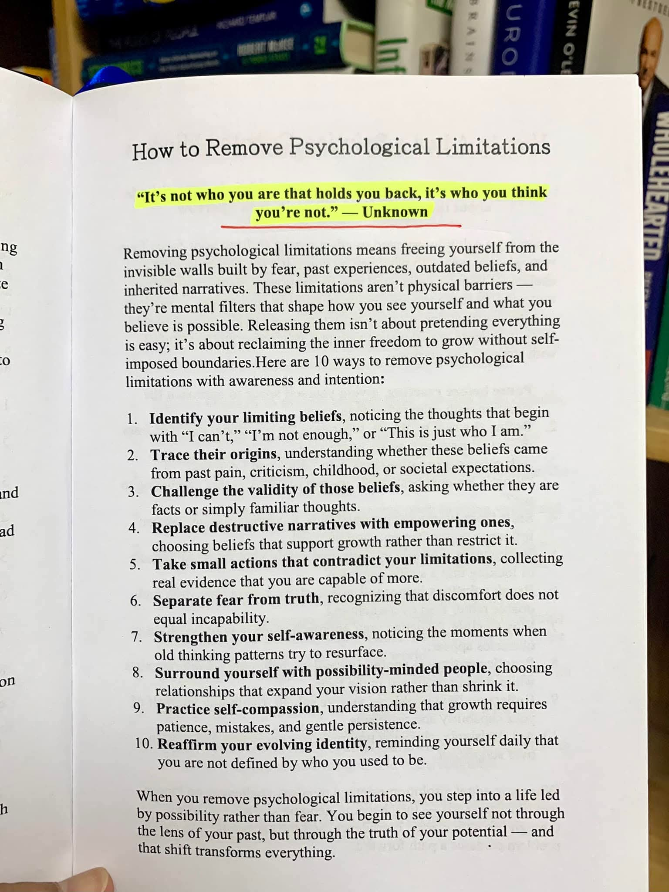

Hujan sore di Bandung selalu datang tanpa permisi. Langit di atas Jalan Braga berubah menjadi perak tua, lalu turunlah rintik yang membasahi trotoar dan deretan kafe kolonial. Di lantai dua sebuah bangunan tua yang disulap menjadi ruang kerja bersama, tiga orang duduk melingkar di sofa beludru hijau botol. Aroma kopi Tubruk bercampur wangi kayu jati basah. Di antara mereka, ada kesunyian yang berbeda—bukan canggung, melainkan hening yang sarat pertanyaan.
Raya Anindita (32), arsitek lanskap lulusan ITB yang baru saja mundur dari biro ternama, menatap jendela. Tangannya memeluk cangkir keramik. Di seberangnya, Ganendra Prasetya (34), dosen psikologi kognitif Unpad yang tengah cuti penelitian, menyandarkan punggung sambil memejamkan mata. Lalu ada Damar Lintang (30), pemilik kedai buku independen dan penyair kota yang lebih banyak diam, duduk di pojok dengan buku catatan usang. Ketiganya bertemu setiap Selasa sore, tanpa agenda pasti, hanya untuk melepas batasan yang tak kasatmata.
Raya memecah hening. “Aku merasa terjebak bukan karena kurang kompeten. Tapi karena setiap kali aku mau melangkah, ada suara yang bilang, ‘kamu ini terlalu idealis’, atau ‘perempuan arsitek itu lebih cocok di detail, bukan konsep besar’. Lama-lama suara itu jadi suaraku sendiri.” Ia menatap dua sahabatnya. “Apakah itu cuma aku?”
Ganendra membuka mata, tersenyum tipis. “Di kelas, aku mengajarkan mahasiswa tentang self-limiting beliefs. Tapi kadang aku lupa bahwa diriku sendiri juga menyimpannya rapi di laci bawah sadar. Setiap kali mau menulis jurnal internasional, aku selalu mikir, ‘ah, ini kurang tajam, nanti ditolak’. Akhirnya nggak jadi submit.” Ia mengambil napas. “Batasan psikologis itu seperti hantu yang kita pelihara sendiri.”
Damar yang sedari tadi mencoret-coret, mengangkat wajah. “Gue tumbuh besar di keluarga yang menganggap sastra itu pelarian. Bapak pengusaha tekstil, Ibu dokter. Setiap gue bilang mau bikin pameran puisi, mereka bilang ‘cari kerja yang bener’. Dan tanpa sadar gue mulai percaya bahwa jalan gue ini kurang sah. Sampai sekarang, meskipun kedai buku gue rame, kadang gue masih merasa kayak anak kecil yang main-main.” Suaranya datar, tapi matanya berkaca-kaca.
Raya mengangguk. “Aku ingat, waktu kecil Ibu selalu bilang, ‘Perempuan itu jangan terlalu tinggi mimpinya, nanti susah dapat jodoh’. Aku pikir itu nasihat biasa. Tapi sekarang aku sadar, itu yang membuatku selalu ragu mengambil proyek besar. Padahal portofolioku mumpuni.” Ia meletakkan cangkir, menatap gambar Pengingat yang terpasang di dinding ruangan—sebuah karya visual tentang dinding kaca yang mulai retak, dimasuki cahaya. Mereka bertiga memang sengaja mencetak gambar itu sebagai pengingat. “Aku mau coba cara yang kedua: melacak asal-usulnya.”
Malam mulai turun, hujan reda. Lampu-lampu temaram di Braga menyala. Ganendra menyalakan lilin aromaterapi. “Asal-usul keyakinan itu sering dari masa kecil, kritik orang tua, atau norma sosial. Gue pernah merasa bahwa jadi dosen harus kaku dan serius. Padahal mahasiswa justru suka kalau kita manusiawi. Tapi bertahun-tahun gue pakai topeng itu. Sampai gue tanya, ‘apakah ini fakta, atau sekadar pikiran yang akrab?’”
Damar menyahut, “Gue tantang validitasnya. Benarkah penyair tidak bisa sukses? Benarkah puisi cuma hobi? Gue mulai buka lapak kecil di Pasar Buku Palasari, lalu berkembang. Buktinya banyak orang yang butuh kata-kata. Tapi tiap kali ada yang muji, gue masih merasa tidak pantas. Itu dia si hantu.”
Raya tersenyum getir. “Aku mau coba mengganti narasi destruktif dengan narasi yang mendukung. Bukan sekadar afirmasi kosong. Misalnya, daripada bilang ‘aku terlalu idealis’, aku bilang ‘aku punya visi kuat, dan itu nilai tambah’. Rasanya aneh awalnya, seperti pakai baju baru.”
Obrolan mengalir seperti sungai Cikapundung yang tenang. Mereka sepakat bahwa melepaskan batasan psikologis memerlukan tindakan kecil yang berlawanan dengan keyakinan lama. Damar bercerita, minggu lalu ia nekat mengirimkan naskah puisinya ke penerbit mayor di Jakarta. Biasanya ia hanya menerbitkan sendiri via kedai. “Rasanya seperti lompat dari tebing. Tapi aku butuh bukti bahwa aku bisa. Aksi kecil itu mengumpulkan bukti nyata bahwa aku lebih dari yang kupikir.”
Ganendra mengingat tentang memisahkan rasa takut dari kebenaran. “Ketidaknyamanan bukan berarti ketidakmampuan. Saat pertama kali mengajar di depan kelas internasional, lututku gemetar. Tapi bukan berarti aku nggak kompeten. Rasa takut itu sinyal, bukan vonis.”
Hari berganti pekan. Pertemuan Selasa berikutnya, Raya datang dengan senyum lebih lebar. Ia membawa kabar bahwa ia mulai menggarap proyek revitalisasi taman kota secara independen—sesuatu yang dulu ia anggap mustahil karena merasa ‘belum cukup pengalaman’. “Aku sadar, selama ini aku membangun tembok dari ketakutan akan penolakan. Tapi setelah kutelusuri, penolakan terbesar justru datang dari diriku sendiri. Sekarang aku coba perkuat kesadaran diri. Setiap kali pikiran lama muncul, aku bilang, ‘hai, kamu lagi. Tapi kali ini aku yang pegang kendali’.”
Damar mengeluarkan buku catatannya. Ia membacakan sebuah kutipan yang ia tulis sendiri: “Kita bukanlah bayang-bayang masa lalu. Kita adalah cahaya yang memilih sudut mana yang akan diterangi.” Ganendra tersenyum, “Nah, itu dia. Mengelilingi diri dengan orang-orang yang berpikiran kemungkinan. Kita bertiga ini contohnya. Lingkaran kecil yang saling memperluas pandangan.”
Di sudut ruangan, gambar Pengingat seolah menyaksikan proses itu. Retakan pada kaca di gambar itu semakin terlihat sebagai pintu, bukan kerusakan. Ketiganya sepakat untuk rutin melakukan refleksi bersama. Ganendra mengusulkan latihan welas asih pada diri sendiri. “Kita sering keras pada diri sendiri. Seolah tumbuh harus instan. Padahal, melepas batasan psikologis itu seperti merawat tanaman. Perlu sabar, kadang layu dulu, lalu tumbuh lagi. Self-compassion itu pupuknya.”
Raya mengakui bahwa ia sering membandingkan diri dengan arsitek lain yang lebih ‘sukses’. “Tapi sekarang aku coba bilang, ‘tidak apa, kamu sedang dalam proses. Langkah kecilmu tetap berharga’. Rasanya lebih ringan.”
Mereka lalu membahas poin kesepuluh: menegaskan kembali identitas yang terus berkembang. Damar mengaku, “Setiap pagi aku menulis di cermin: ‘Aku bukan lagi anak yang perlu validasi ayah. Aku adalah pemilik kedai buku dan penyair yang karyanya bermakna’. Awalnya konyol, lama-lama meresap.”
Ganendra menimpali, “Di dunia psikologi, kita menyebutnya self-affirmation yang berbasis nilai. Bukan sekadar mantra, tapi pengingat akan kebenaran yang kita pilih. Kamu bukan ditentukan oleh siapa dirimu dulu, tapi oleh pilihanmu sekarang.”
Minggu-minggu berikutnya, perubahan kecil terjadi. Raya berhasil meyakinkan dua klien untuk konsep taman ramah lansia yang dulu dianggap ‘terlalu rumit’. Ganendra mengirimkan abstrak risetnya ke konferensi di Seoul, dan diterima. Damar? Ia mendapat surel dari penerbit bahwa naskahnya lolos seleksi awal. “Aku hampir menangis. Bukan karena pengakuan, tapi karena aku akhirnya percaya bahwa suaraku layak didengar.”
Suatu sore di bulan Juni, mereka bertiga duduk di balkon yang sama. Angin sepoi membawa suara gamelan dari sanggar dekat Alun-alun. Raya memandang gambar Pengingat yang masih setia di dinding. “Dulu aku pikir gambar ini tentang menghancurkan batasan. Tapi sekarang aku sadar, ini tentang membiarkan cahaya masuk lewat retakan. Batasan itu tidak harus hilang sepenuhnya, tapi kita belajar untuk tidak dikendalikan olehnya.”
Ganendra menambahkan, “Proses ini terus berjalan. Kadang batasan lama muncul lagi saat kita stres. Tapi kita sudah punya alat. Dan yang terpenting, kita tidak sendirian.”
Damar menatap langit senja. “Bandung ini kota yang penuh kenangan, tapi juga selalu baru. Sama seperti kita. Kita boleh membawa sejarah, tapi kita tidak harus menjadi tawanannya.”
Obrolan mereda. Hanya suara sendok mengaduk kopi. Di antara mereka, ada pemahaman bahwa melepaskan batasan psikologis bukanlah tujuan akhir, melainkan praktik harian. Seperti yang tertulis di bawah gambar itu: “It’s not who you are that holds you back, it’s who you think you’re not.”
Raya meraih tasnya, mengeluarkan sebuah buku catatan kecil. “Aku mulai menulis jurnal ‘bukti kemampuan’. Setiap kali aku berhasil melakukan sesuatu yang dulu kuanggap mustahil, aku tulis. Saat ragu, aku baca lagi. Ini cara konkret menantang batasan.”
Damar menyahut, “Gue juga mulai bikin ‘papan visi’ di kedai. Isinya bukan cita-cita muluk, tapi afirmasi berbasis bukti. Misalnya, ‘Pelanggan kembali karena suasananya’, atau ‘Puisi gue ditempel di kafe lain’. Itu mengingatkan bahwa yang gue lakukan berdampak.”
Ganendra menutup mata, lalu berkata lirih, “Kita semua sedang belajar menjadi arsitek bagi jiwa sendiri. Melepas batasan psikologis itu ibarat merancang ulang denah batin. Kadang kita perlu merobohkan sekat yang sudah tidak relevan.”
Hujan kembali turun. Kali ini mereka tidak merasa terkurung. Justru hujan menjadi latar yang menenangkan. Raya memandang kedua temannya. “Terima kasih sudah menjadi cermin yang jernih. Kadang kita butuh orang lain untuk melihat bahwa dinding itu sebenarnya terbuat dari kaca—tampak kokoh, tapi bisa ditembus cahaya.”
Damar membuka ponselnya, memutar lagu instrumental lembut karya komposer Bandung. Suasana semakin syahdu. “Kapan-kapan kita harus bikin acara kecil di kedai, tema ‘Melepas Batasan’. Mengundang siapa saja yang ingin berbagi cerita tentang tembok tak kasatmata mereka.”
Ganendra mengangguk antusias. “Bagus. Karena dengan berbagi, kita mengingatkan bahwa kita tidak sendiri. Dan setiap cerita adalah retakan kecil yang memasukkan cahaya.”
Pukul delapan malam, mereka beranjak. Di pintu, Raya berhenti sejenak, menatap gambar Pengingat. Ia berbisik, “Aku sedang dalam perjalanan pulang ke diriku yang lebih utuh.”
Kisah ini belum usai. Di sudut-sudut Bandung, di antara kafe-kafe kecil dan gang-gang sempit, banyak Raya, Ganendra, dan Damar lainnya yang sedang bertarung dengan batasan yang mereka ciptakan sendiri. Namun dengan kesadaran, dukungan, dan tindakan kecil, batasan itu perlahan menjadi jendela.
Dan seperti kata pepatah yang mereka temukan di kedai buku Damar: “Engkau bukanlah gunung yang tak bisa dipindah. Engkau adalah sungai yang selalu menemukan jalan.” Melepaskan batasan psikologis memang tidak instan. Namun setiap langkah kecil adalah kemenangan atas rasa takut yang selama ini bersembunyi di balik kata “tidak bisa”.
Malam itu, saat Raya tiba di apartemen kecilnya di daerah Dago, ia membuka laptop dan mulai menulis proposal baru. Di bagian atas, ia mengetik: “Taman untuk Semua: Merayakan Keterbatasan Menjadi Ruang yang Ramah.” Ia tersenyum. Dulu ia akan menghapusnya karena merasa terlalu ambisius. Sekarang ia tahu, itu bukan ambisi kosong, melainkan panggilan yang selama ini tertutup batasan psikologis.
Damar di kedainya, merapikan buku dan menyalakan lilin. Ia membuka buku tamu dan membaca satu tulisan anonim: “Tempat ini membuatku merasa puisi adalah obat.” Damar menulis balasan kecil di bawahnya: “Dan kamu adalah penyair bagi hidupmu sendiri.” Ia merasa inilah cara ia melepas batasan: dengan mengajak orang lain melihat kemungkinan.
Ganendra di ruang kerjanya, menyelesaikan revisi paper sambil mendengarkan suara hujan. Ia menulis catatan di jurnal pribadinya: Hari ini aku mengingatkan diri sendiri bahwa menjadi dosen bukan berarti tahu segalanya. Aku juga pembelajar. Dan itu membebaskan. Ia menutup jurnal, lalu menyalakan diffuser dengan aroma kenanga.
Begitulah, di kota yang terkenal dengan kreativitas dan intelektualitasnya, tiga orang terdidik cerdas ini terus berjalan. Mereka tidak lagi menjadi tawanan batasan psikologis. Mereka menjadi sahabat bagi diri sendiri, dan bagi satu sama lain. Mereka mengerti bahwa melepaskan batasan bukan tentang menjadi sempurna, melainkan tentang menjadi lebih jujur pada potensi yang selama ini terpendam.
Gambar Pengingat tetap tergantung di dinding ruang kerja bersama itu. Setiap kali ada yang datang dan bertanya, mereka akan menjawab, “Itu pengingat bahwa dinding yang kau lihat bisa jadi hanya bayangan. Dan di baliknya, selalu ada cahaya.”